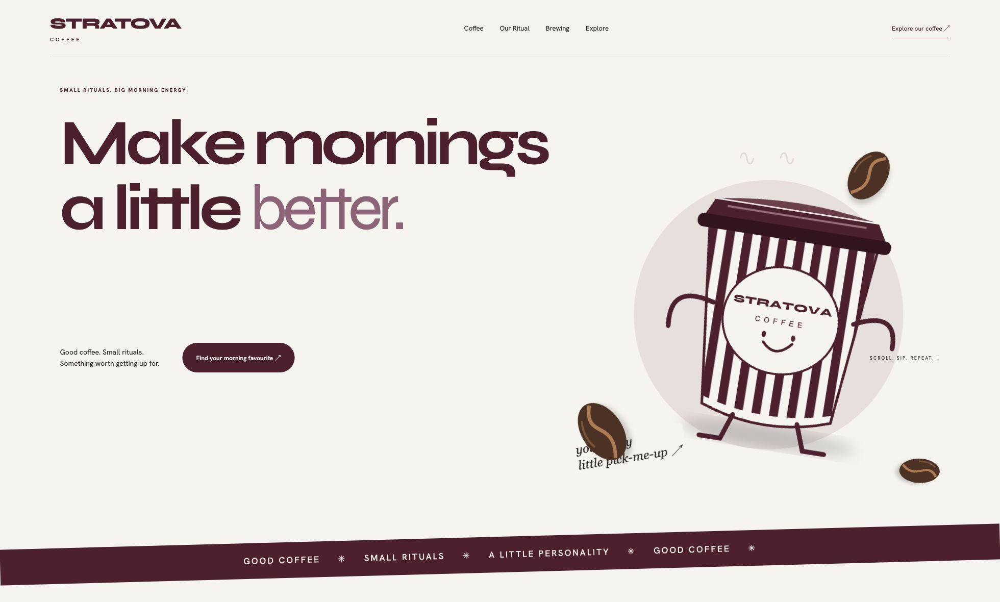

Stratova Coffee ↗
CONCEPT PROJECT · WEB DESIGN · DEVELOPMENT · MOTIONA fictional coffee identity brought to life with original illustrations, responsive design and purposeful motion.
Standalone portfolio integration preview. This page has not been added to the live Stratova website.

A fictional coffee identity brought to life with original illustrations, responsive design and purposeful motion.